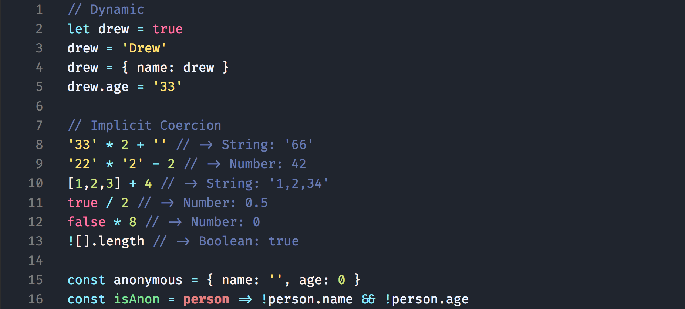
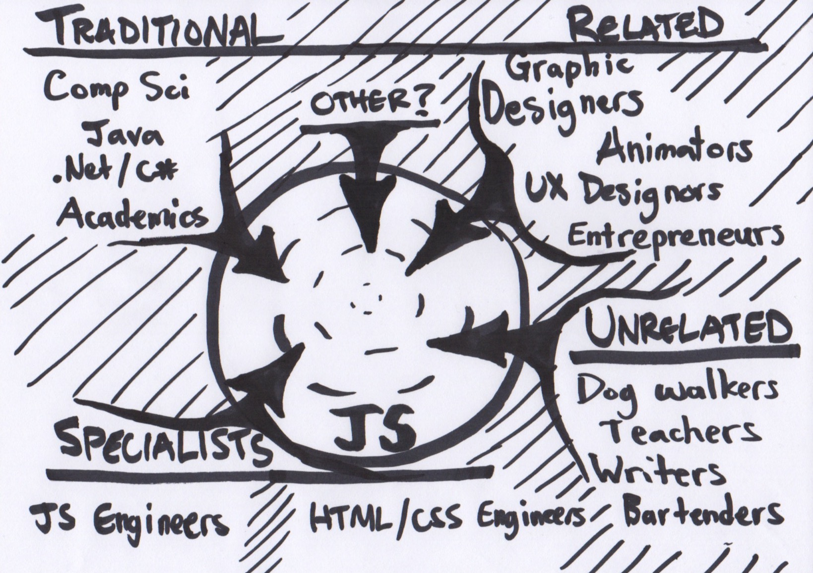
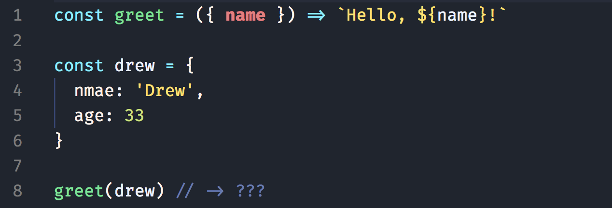

The Goal
- Lightly compare JS & TS
- Establish Type System vocab
- Consider context
- Examine assumptions & ideas
NOT The Goal...
- Learn TypeScript
- Deep dive Types or JS/TS features
- üí© on either JS or TS
- Proclaim expertise or authority
I Come In Peace ✌️
- Passionate subject, strong opinions
- Confusing & complex
- Conflicting definitions & information
- ↳ Lots of misconceptions and fallacies
- ↳ I will probably get some things wrong
Common Ground
| JavaScript | TypeScript | Java | Elm |
| Weak | Strong | Strong | Strong |
- What to know before debating type systems (Chris Smith F#?)
- JavaScript's type system (Dr. Axel Raushmayer)
- Stack Overflow explanation (some professor)
- Wiki: Type system ("no universally accepted definition")
- Wiki: Strong & weak typing (note: "colloquially", "generally")
Common Ground
| JavaScript | TypeScript | Java | Elm |
| Dynamic | Static | Static | Static |
- Dynamic: type checking at run time, allows changes*
- Static: type checking at compile time, can NOT change*
The Thing About JavaScript ü§ó
Common Ground
| JavaScript | TypeScript | Java | Elm |
| Dynamic | Static | Static | Static |
| Coercion | (Explicit) | (Explicit) | (Explicit) |
Context
Rapid Growth
Diverse Users 
The Throne is Nigh!
try {
Object.defineProperties(js, {
- #1 most contributors 4 years (GitHub, 2018),
- #1 most used 6 years (Stack Overflow, 2018 Survey),
- 10 million + users & largest OSS registry (npm - 800K+),
- Browsers, Servers, Mobile, IoT... (npm - 93/70/44/6)
})
} catch (fatigue) { ... } finally {
- Dust is settling...
}
Context
- Flexible (Dynamic, Multi Paradigm)
- Forgiving (Coercion)
- Approachable & Open Source
- Diverse users
- Diverse, new, old ideas
- Massive ecosystem
- Used everywhere by everyone
- Quick adoption (+ Fatigue)
The Thing About JavaScript ü§¨

// -> "Hello, undefined"
The Thing About JavaScript ü§¨
// -> Uncaught TypeError: Cannot destructure property `name` of 'undefined' or 'null'.
Behold, A Hero Approaches!

C#? Java? ...No!
Tis I, TypeScript!
Promise.all([
- 3rd fastest growing (GitHub, 2018),
- #7 most contributors (GitHub, 2018 up from #10),
- "Breath. Of. Fresh. Air." (Kent C. Dodds, RE: TS in paypal-scripts),
- "Someone...will bring in TS [in 2019]" (npm),
- VS Code, Vue 3.0, Yarn 2.0
])
...with Great Tidings!
Promise.all([
- JavaScript that scales,
- More self documenting / easier to understand,
- Eliminate entire categories of bugs,
- Write less tests and guards
]).then(
- "Why would you NOT use TypeScript?" (some article),
- Should I STOP using JavaScript?
)
The Thing About TypeScript ü§©
test.js → test.ts
The Thing About TypeScript ü§©
+ Compiler
The Thing About TypeScript ü§©
+ Dev tooling
The Thing About TypeScript ü§©
The Thing About TypeScript ü§©
Inference: Look, ma! No added syntax!
The Thing About TypeScript ü§©
Explicit: declarations, annotations, signatures
Common Ground
| JavaScript | TypeScript | Java | Elm |
| Dynamic | Static | Static | Static |
| Coercion | (Explicit) | (Explicit) | (Explicit) |
| - | Inference | Explicit | Inference |
| Duck Typing | Structural | Nominal | Structural |
So... why would you not?
How did we manage?
- type guards (typeof, instanceof)
- error handling (catch)
- JS Docs
- linting
- unit, integration, E2E tests
- CRs, PRs, pair/mob programming
- a little help from our IDE (TernJS)
Save us! üêõ
// -> Uncaught TypeError: Cannot destructure property `name` of 'undefined' or 'null'.
Save us! üêõ
-
"modest effects"
"overwhelmingly dominated by [other] factors"
"[might] be due to other, intangible[s]" (Large Scale Study...) -

(The broken promise of static typing) -
"just 38 out of 1,000 potential bugs"
(after applying TDD, reviews, etc.) (The TypeScript Tax) -
"most studies find very small effects, if any"
"probably don't cover contexts you're actually interested in"
(Static v. dynamic languages)
The Thing About TypeScript ü§î
-
Limited ecosystem (definitely-typed)
- ↳ #1 factor in language selection
- More decisions (+ mistakes)
-
Limitations / struggles
- ↳ polymorphism & generics (implied "any")
- ↳ higher order functions / components
- Typing time & maintenance
-
Steeper learning curve
- ↳ limits on recruiting
- ↳ training / onboarding
- Still JS at run time
Why not both?
test.js → test.ts // @ts-check
Why not both?
Why not both?
Alternatives
- Elm
- ReasonML
- Flow (maybe?)
- sanctuary-def
- rtype
Conclusions
- TypeScript has benefits
- ↳ (less tests, dev tooling)
- Will continue to gain momentum
- Can't save us from bugs
- Don't ignore costs
- Consider context
- Learn JavaScript
Resources
- What to know before debating type systems Chris Smith (F# language designer?)
- JavaScript's type system by Dr. Axel Raushmayer
- Strong/Weak Static/Dynamic Languages explanation Stack Overflow (some professor)
- Type system (Wikipedia)
- Strong & weak typing (Wikipedia)
- 2018 GitHub Language Stats
- 2018 Stack Overflow Survey
- This year in JavaScript 2018 in review and npm’s predictions for 2019
- paypal-scripts now supports TypeScript as well as JavaScript Kent C. Dodds
- Yarn's Future - v2 and beyond (Being rewritten in TS)
- Plans for the Next Iteration of Vue.js (Being rewritten in TS)
- Why would you NOT use TypeScript? Johnathan Creamer
- A Large Scale Study of Programming Languages and Code Quality in Github Department of Computer Science, University of California, Davis, CA
- The broken promise of static typing (Analysis of bugs on GitHub, Daniel Lebrero)
- Static v. dynamic languages (Analysis of studies, Dan Luu)
- The TypeScript Tax Eric Elliot
- typescriptlang.org (see type-checking JS)
- Flow (another static type-checker for JS)
- elm-lang.org Statically Typed Language for FE Dev
- ReasonML Statically Typed Language for FE Dev
- Rtype (runtime type-checking in JS)
- sanctuary-def (runtime type checking in JS)
Thank You!
Resources
- http://blogs.perl.org/users/ovid/2010/08/what-to-know-before-debating-type-systems.html
- http://2ality.com/2013/09/types.html
- https://stackoverflow.com/questions/2690544/what-is-the-difference-between-a-strongly-typed-language-and-a-statically-typed
- https://en.wikipedia.org/wiki/Type_system#Strong_and_weak_type_systems
- https://en.wikipedia.org/wiki/Strong_and_weak_typing
- https://octoverse.github.com/projects#languages
- https://insights.stackoverflow.com/survey/2018#technology
- https://medium.com/npm-inc/this-year-in-javascript-2018-in-review-and-npms-predictions-for-2019-3a3d7e5298ef
- https://medium.com/paypal-engineering/why-every-new-web-app-at-paypal-starts-with-typescript-9d1acc07c839
- https://github.com/yarnpkg/yarn/issues/6953
- https://medium.com/the-vue-point/plans-for-the-next-iteration-of-vue-js-777ffea6fabf
- http://jonathancreamer.com/why-would-you-not-use-typescript/
- http://web.cs.ucdavis.edu/~filkov/papers/lang_github.pdf
- https://labs.ig.com/static-typing-promise
- http://danluu.com/empirical-pl/
- https://medium.com/javascript-scene/the-typescript-tax-132ff4cb175b
- https://www.typescriptlang.org/index.html
- https://www.typescriptlang.org/docs/handbook/type-checking-javascript-files.html
- https://flow.org/
- https://elm-lang.org/
- https://reasonml.github.io/
- https://github.com/ericelliott/rtype
- https://github.com/sanctuary-js/sanctuary-def